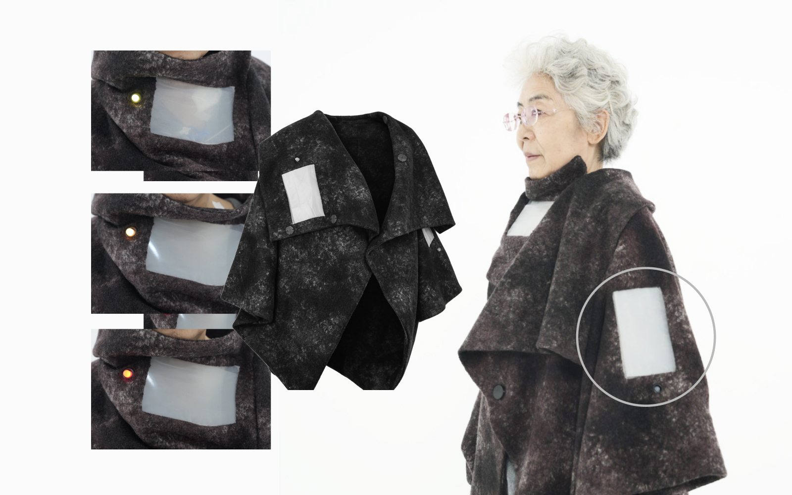

SERVICE DESIGNER
DESIGN RESEARCHER
EDUCATOR
HEALTHCARE
AGEING
INCLUSIVE DESIGN
Designing services, systems and experiences for healthier, more inclusive futures.
Selected Work
Research
Exploring how design can contribute to healthier, more inclusive and more caring futures.
Ageing & Healthcare
Exploring new models of preventive healthcare, ageing well and everyday care experiences.
Inclusive Design
Designing services and systems that respond to diverse abilities, needs and lived experiences.
Multisensory Interaction
Investigating how touch, vision, sound and olfaction can create richer human experiences.
Emerging Technology
Exploring AI, wearable technologies and intelligent systems as tools for human-centred design.
About
I am a service designer and design researcher exploring how design can create more inclusive, caring and meaningful experiences across healthcare, ageing and everyday life.
My practice sits at the intersection of service design, interaction design, healthcare, ageing and inclusive design. I explore how emerging technologies, multisensory interaction and participatory approaches can support more human-centred forms of care.
Alongside my design practice and research, I work in design education and management, supporting emerging designers in developing creative thinking, research capabilities and systems-oriented approaches to real-world challenges.
Education
Royal College of Art
London, UK · MA, Service Design · 2022–2023
Communication University of Zhejiang
Hangzhou, CN · BFA, Film & TV Cinematography
& Production (TV Cameraing) · 2018–2022
Experience
ATA Creativity Global Limited
Beijing, CN · Full-time, Design Researcher &
Senior Manager, Elderly Care Services Lab ·
2023–Present
Mercer (Marsh McLennan)
Shanghai, CN · Learning and Development
Consulting Business Marketing Intern · 2021
Honors & Awards
Muse Design Awards — Gold & Silver Winner · Aug 2026
London Design Awards — Silver Winner · Jul 2026
Asian Economics Research Institute — Committee Member · 2026–2028
American Psychological Association — Membership · 2025–2026
UK Design for Good — Merit Award for Participation · 2023
China Scholarship Council (CSC) — Scholarship Recipient · Jun 2022
Other Education
Aalto University — TU-E3170 Facilitating Change · Apr–May 2026
University of Oxford Saïd Business School — AI and Digital Transformation in Government · Jan–Dec 2025
Imperial College London Business School — Entrepreneurship Journey, Minor MBA Program · Oct 2022–Jun 2023
University of Jyväskylä Open University — Education Curriculum · Jun–Aug 2022 · 3 ECTS
University of the Arts London — Short-term Researcher, Human Rights and Computation · Mar–May 2022
Teaching
Tsinghua University – Academy of Arts & Design, TA
“Design Futures & Shaped Vision” International Summer Program – Youth Mentor · 06–07, 2026
Beijing, CN
Imperial College London & RCA, Innovation Design Engineering Summer School, TA
Worked with Dr John Stevens, Senior Tutor · 07–08, 2024
Beijing, CN
University of the Arts London, Interaction Design Summer School, TA
Worked with Maria Dada, Course Leader · 08–09, 2025
Beijing, CN
PUBLICATIONS